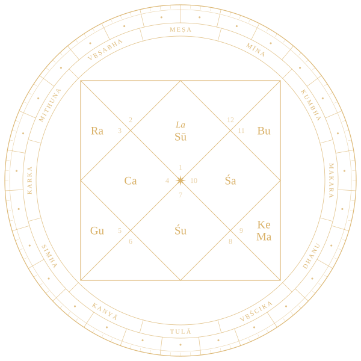

Timing del matrimonio
Los períodos más favorables para el amor y la pareja.
Astrología védica · Autoconocimiento · Evolución del alma
Astrología védica para una vida consciente y en armonía con tu alma.
Consciencia · Propósito · Equilibrio · Evolución del alma

Los períodos más favorables para el amor y la pareja.
Tu propósito, dirección y oportunidades.
Tendencias futuras y decisiones conscientes.
Tu naturaleza, emociones y fortalezas.
Tus dones y cómo usar tu potencial.
Tus aprendizajes y la evolución de tu alma.
✦ Sobre mí
Hola, soy Asia.
Te ayudo a entender tu carta védica: tus ciclos, tus relaciones, tus talentos y el momento de vida en el que estás. Lo hago de forma clara, cercana y sin miedo.
Llegué a la astrología védica en 2024, en una etapa en la que buscaba respuestas sobre mí misma. Lo que encontré no fueron predicciones, sino comprensión: por qué ciertas situaciones se repetían, qué talentos no estaba usando y cuándo era mejor momento para actuar. Ese cambio en mi vida es lo que hoy quiero compartir contigo.
Estudio Jyotish con mi maestro, astrólogo de Maharashtra (India), en la tradición clásica de maestro a alumno (guru-shishya parampara). Me formo de manera continua desde 2024, con base en los textos clásicos, como el Brihat Parashara Hora Shastra, y en el sistema KP para el análisis del matrimonio. He preparado más de 50 lecturas para personas de España, Latinoamérica y Polonia.
En mis lecturas trabajo con:
Tus datos y los temas de tu lectura son confidenciales. Los uso solo para preparar tu lectura y, si quieres, los borro pasados 6 meses. Política de privacidad
¿Te gustaría conocer tu carta? Escríbeme y te ayudo a elegir la lectura que mejor encaja con lo que estás viviendo.
Ver la oferta →
✦ Oferta
Cuatro formas de conocer tu carta védica, tu nombre, tu pareja y tu camino. Escríbeme por WhatsApp y te explico cuál es la mejor para ti.
33 €
Tu carta védica en lo esencial, con remedios sencillos y la energía de tu nombre.
| Qué recibes | Qué significa para ti |
|---|---|
| Panchanga de nacimiento | Una «foto» del cielo el día en que naciste: la fase de la Luna, tu estrella lunar y el día de la semana. Muestra tu energía básica y tu forma de ser. |
| Ascendente y signo lunar | El ascendente muestra cómo te ven los demás y cómo vives; el signo lunar, cómo sientes y qué necesitas para estar bien. |
| Nakshatra lunar y su planeta regente | En la astrología védica el cielo se divide en 27 «estrellas lunares». La tuya y su planeta describen tus talentos naturales y tus retos. |
| Planetas fuertes y débiles | Qué energías te ayudan con facilidad en la vida y cuáles necesitan más apoyo. |
| Energía del nombre | Qué energía transmite tu nombre y, solo si hace falta, un pequeño cambio en la forma de escribirlo para tus redes, tu correo o tu firma. |
| Números, días y colores favorables | Los números (por ejemplo, para tu teléfono), los días de la semana y los colores que mejor te acompañan. |
|---|---|
| 3 remedios sencillos | Tres prácticas fáciles para equilibrar tu energía: una frase para repetir (mantra), un pequeño hábito diario y un gesto semanal. |
| Durante 1 día después de recibir tu lectura puedes escribirme tus dudas. |
50 €
Tu carta completa: amor, carrera, dinero, tu momento actual y tus remedios personales.
| Qué recibes | Qué significa para ti |
|---|---|
| Todo lo de la Lectura Esencial | Tu energía básica, tu ascendente, tu signo lunar, tus planetas fuertes y débiles, tu nombre y tus números y colores favorables. |
| Las 12 casas y sus regentes | Tu carta se divide en 12 áreas de la vida (amor, trabajo, dinero, familia, salud…). Te explico cómo está cada una y qué significa para ti. |
| Rajyogas y doshas | Las combinaciones especiales de tu carta: las que favorecen el éxito y la buena fortuna, y los puntos delicados a los que conviene prestar atención. |
| Aspectos planetarios (drishti) | Cómo se influyen los planetas entre sí: qué áreas de tu vida reciben apoyo y en cuáles sientes más presión. |
| Lección del alma y karma | Qué ha venido a aprender tu alma en esta vida, qué talentos traes de vidas pasadas y por qué se repiten ciertas situaciones. |
| Amor y matrimonio | Cómo amas, qué tipo de pareja es mejor para ti y cómo puede ser tu matrimonio. |
|---|---|
| Carrera y dinero | En qué trabajos puedes destacar, de dónde te puede llegar el dinero y qué áreas te resultan más favorables para crecer. |
| Tu periodo actual | La etapa de la vida que estás viviendo ahora según tu carta, qué te trae y qué tendencias se activan en los próximos 2 años. |
| Remedios personalizados | Prácticas para equilibrar tu energía: frases para repetir (mantras), meditación, ayunos, donaciones y pequeños gestos de la tradición india. |
| Gemas | Si tu carta lo indica, te digo qué piedra te puede ayudar y cómo llevarla. Si no es necesaria, no la recomiendo. |
| Nombre personal y del negocio | Qué energía transmiten tu nombre y el nombre de tu negocio y, si hace falta, cómo mejorarla. |
| Tarjeta digital | Una imagen para guardar en el móvil con tus remedios, tus colores y tus días favorables. |
| Durante 1 día después de recibir tu lectura puedes escribirme tus dudas. |
60 €
¿Somos compatibles? La conexión de vuestras almas, vuestro amor y vuestro futuro juntos.
| Qué recibes | Qué significa para ti |
|---|---|
| Retrato de cada uno | Cómo es cada uno de vosotros: carácter, emociones y lo que cada uno busca en la vida. |
| Guna Milan (36 puntos) | El método tradicional indio para comprobar la compatibilidad de pareja: 8 aspectos de la relación, con una puntuación de 0 a 36 explicada paso a paso. |
| Doshas de pareja | Los puntos delicados de la relación que la tradición india tiene en cuenta, y si en vuestro caso se suavizan o desaparecen. |
| Compatibilidad emocional | Cómo sentís cada uno y si os entendéis fácilmente en lo emocional. |
| Amor y atracción | Qué os atrae el uno del otro, la química entre vosotros y cómo vivís el amor. |
| Sinastría | Cómo influye la carta de uno en la del otro: en qué os apoyáis y dónde pueden aparecer roces. |
|---|---|
| Conexión kármica | Si sois «almas conocidas» y qué venís a aprender o a completar juntos. |
| Matrimonio y futuro | Cómo puede ser vuestra vida juntos a largo plazo y qué pareja busca el alma de cada uno. |
| Vuestros tiempos | En qué etapa de la vida está cada uno ahora y cuáles son los mejores momentos para dar pasos juntos en los próximos 2–3 años. |
| Consejos para la pareja | Qué necesita cada uno para sentirse amado y cómo resolver mejor los conflictos. |
| Remedios para la pareja | Prácticas sencillas para fortalecer la relación y suavizar sus puntos delicados. |
| Fecha favorable (muhurta) | Elijo el mejor día para un paso importante: compromiso, boda o mudanza juntos. |
| Durante 7 días después de recibir la lectura podéis escribirme vuestras dudas. |
104 € 86 €
Una guía completa para tu vida y tu negocio: tiempos, hogar, números y marca.
| Qué recibes | Qué significa para ti |
|---|---|
| Todo lo de la Carta Védica y Remedios | Las 12 áreas de tu vida, tus combinaciones de éxito, tu karma, el amor, la carrera, el dinero y tus remedios personalizados. |
| Previsión de 3 años | Qué etapas vas a vivir en los próximos 3 años y qué movimientos importantes de los planetas te afectarán. |
| Ventanas favorables | Los mejores momentos de los próximos años para el amor, el matrimonio, el trabajo o una mudanza. |
| Carrera en profundidad | Un análisis más detallado de tu vida profesional: qué trabajo o tipo de negocio es mejor para ti. |
| Análisis KP del matrimonio | Un segundo método astrológico indio (KP) para confirmar lo que muestra tu carta sobre el matrimonio. |
| Salud y energía | Los puntos de tu cuerpo y tu energía que conviene cuidar más, con consejos sencillos. Es orientativo y no sustituye al médico. |
|---|---|
| Vastu para tu hogar | Consejos de la tradición india para organizar tu casa: las mejores direcciones para el dormitorio, la zona de trabajo y la cabecera de la cama. |
| Números favorables | Los números que mejor te acompañan para el teléfono, la matrícula del coche, el número de casa y las fechas importantes. |
| Nombre de tu marca | Qué energía transmite el nombre de tu negocio, cómo mejorarlo y cuál es la mejor entre hasta 3 opciones. |
| Fecha favorable (muhurta) | Elijo el mejor día para un paso importante: lanzar un proyecto, firmar, mudarte o casarte. |
| Remedios completos | Todas las prácticas para equilibrar tu energía: mantras, meditación, ayunos, donaciones, colores, días y direcciones favorables. |
| Gemas | Si tu carta lo indica, te digo qué piedra te puede ayudar y cómo llevarla. Si no es necesaria, no la recomiendo. |
| Tarjeta digital | Una imagen para guardar en el móvil con tus remedios, tus colores y tus días favorables. |
| Durante 14 días después de recibir tu lectura puedes escribirme tus dudas. |
Pago por adelantado a través de RemitlyContacto por WhatsAppTu lectura por correo electrónico en un plazo de hasta 5–6 días
Para las lecturas védicas necesito tu fecha, hora exacta y lugar de nacimiento. La astrología védica muestra tendencias y momentos favorables; no sustituye el consejo médico, psicológico, legal ni financiero.
✦ Preguntas frecuentes
Es la astrología tradicional de la India, con miles de años de historia. A diferencia de la astrología occidental, usa las constelaciones reales (por eso tu signo puede ser distinto al que conoces), las 27 estrellas lunares (nakshatras) y los periodos planetarios, que muestran no solo cómo eres, sino también qué etapas de tu vida se activan y cuándo.
Para las lecturas védicas necesito tu fecha, hora exacta y lugar de nacimiento, tu nombre completo y tu correo electrónico, donde te enviaré la lectura. Para la Compatibilidad de Pareja necesito los datos de nacimiento de ambas personas. Si quieres que analice tu negocio, envíame también su nombre.
La hora es muy importante, porque pocos minutos pueden cambiar el ascendente y las casas. Búscala en tu partida o certificado de nacimiento, o pregunta en tu familia. Si solo tienes una hora aproximada, te indicaré qué partes de la lectura son menos precisas.
Si es tu primera vez, la Lectura Védica Esencial es un buen comienzo. Si quieres respuestas sobre amor, carrera, dinero y tu momento actual, elige la Carta Védica y Remedios. Para tu relación, la Compatibilidad Védica de Pareja. Y si quieres un análisis completo con previsión, vastu y números, la Guía Védica Completa. Si tienes dudas, escríbeme y te ayudo a elegir.
Todo el contacto es por WhatsApp: pulsa «Reservar por WhatsApp» en la oferta que te interese o escríbeme directamente. Te confirmo los datos que necesito y te envío la información de pago. Una vez recibidos los datos y el pago, empiezo a preparar tu lectura.
El pago se realiza por adelantado a través de Remitly, una forma sencilla y segura de enviar dinero desde cualquier país. Al reservar te envío por WhatsApp todos los datos para el pago.
El tiempo de espera es de hasta 5–6 días desde que recibo tus datos y el pago. Te envío la lectura por correo electrónico. Si necesitas tu lectura con más urgencia, escríbeme y lo vemos.
Los remedios (upayas) son prácticas para equilibrar la energía de los planetas: mantras, meditación, ayunos, donaciones, colores y días favorables, y pequeños gestos de la tradición popular india. No es necesario pertenecer a ninguna religión; puedes vivirlos como meditación y trabajo personal.
Analizo la vibración de tu nombre y, si hace falta, propongo pequeños cambios de escritura. No es necesario cambiar tus documentos: puedes usar la versión corregida en tu firma, en el correo o en las redes sociales. También analizo el nombre de tu negocio o tu marca.
Sí, solo necesito sus datos de nacimiento, que deben compartirse con su consentimiento. La lectura te la envío a ti por correo electrónico y, si queréis, podéis leerla juntos.
No. La astrología védica muestra tendencias, talentos y momentos favorables o más exigentes. Las decisiones siempre son tuyas, y la lectura no sustituye el consejo médico, psicológico, legal ni financiero.
Sí. Tus datos y los temas de tu lectura son confidenciales y solo los uso para preparar tu lectura. Pasados 6 meses desde la entrega los borro, y antes si me lo pides. Tienes todos los detalles en la Política de privacidad.
¿Tienes otra pregunta? Escríbeme por WhatsApp
“Cuando te conoces, todo comienza a cambiar.”
La astrología védica puede ofrecerte un mapa simbólico para la reflexión, la consciencia y una dirección de vida más alineada contigo.
✦ Testimonios
★★★★★“Todo muy acertado.”
— Manu
★★★★★“Descubrí mi dirección y comprendí patrones que llevaba años repitiendo.”
— Ana L.
★★★★★“La consulta me ayudó a reconectar conmigo misma y reconocer mis talentos.”
— Carla R.
Tu próximo capítulo comienza con una pregunta
Reserva una consulta privada y explora lo que tu carta natal védica puede revelar sobre tu camino, relaciones, talentos y desarrollo interior.
Escríbeme por WhatsApp